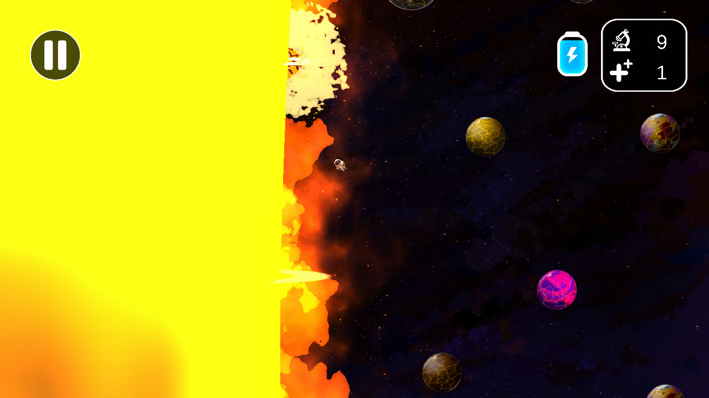
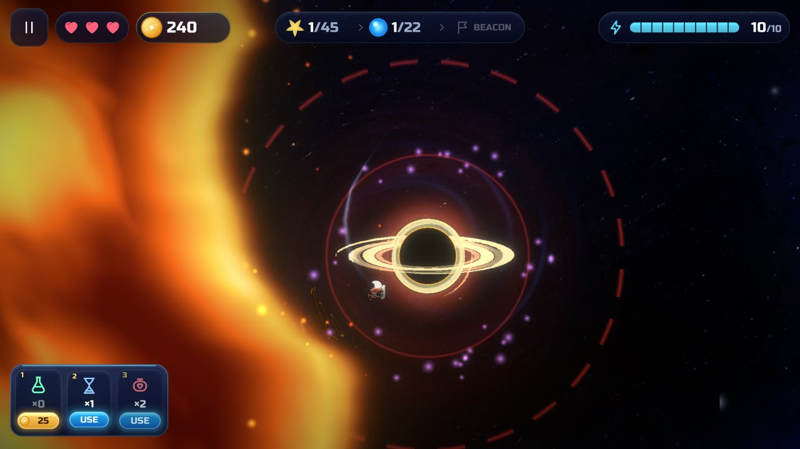
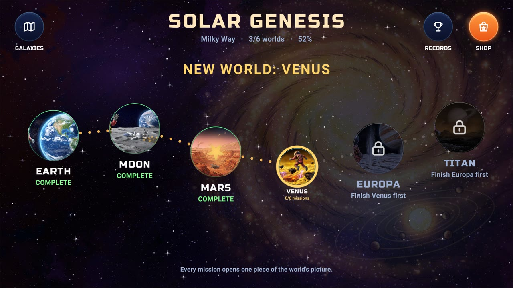

Orbital Jump is a one-button game from 2021. Your astronaut runs around a planet, you tap, he jumps to the next one, and the Sun is coming up behind you. On 2 November 2026 its source code reached us as one 337 MB archive.
Day one: make the old game run
The project was on Unity 2020. We moved it to Unity 6 and took out everything online that had died since: the login and leaderboard server answered only with errors, and the ad, analytics and Facebook kits had nothing left behind them. The leaderboard became a local top ten. That evening the 2021 game went up on itch.io as it was, playable in a browser.
The first verdict on it was “just the good old days”. That was fair, and it was also the problem: a nice memory is not a game anybody picks up today. So Orbital Jump Reloaded started the same day.

The jump that did not jump
The first Reloaded build had a bug that sounds like a joke: the astronaut would not jump. You tapped and he stayed on the planet. Our automatic test runs, which play the game on autopilot, never saw it.
The cause was a little squash-and-stretch we had added for the take-off. In this project the animation lives on the astronaut’s root object, so stretching him also stretched his collision shape. The bigger shape still touched the planet, and on the next physics step he landed again. The fix was to stop stretching the astronaut. The lesson was bigger: the tests now press the button the way a person does, and a test run fails if he ever lands the moment he takes off.
Switched off since 2021
Old code hides things nobody noticed. The scene’s post-processing had its weight set to zero in the 2021 project, so none of its effects ever showed: the screen was meant to darken near a black hole and never did. It is on now, kept low in normal play, with the full dark saved for the moment a hole swallows you.
The Sun had been a flat wall. Now a run starts calm, with the Sun a dim red disk under your home planet. Your first jump sets it alight, straight through the planet you left, and a wall of fire with embers follows you from there.

Is there a set path?
One question from early play was whether there is a set path through the planets. There is not. A flight is plain physics: one push at take-off, then the pull of every planet you pass. That made the camera hard, because it could not know where to look.
So the game now works the flight out at the moment you jump, step by step, the same way the physics will, and knows where you are going to land. In two test runs the first guess was exactly right 32 times out of 38, and it guesses again every frame. The camera uses that: close on the planet you stand on, pulled back to show you and the landing point while you fly, close again for the touchdown.

What it is now
Ten worlds in two galaxies, each a chain of short missions: collect the stars and spheres, reach the beacon. Black holes that swallow you, wormholes that throw you across the sky, planets that hunt you. Three items for a bad moment, five suits, and the classic endless run kept as a mode of its own. It is free, with no ads.
It went live on Google Play on 6 November and on the App Store on 10 November, eight days after the archive arrived. The browser version is on itch.io.

What we would do differently
We put it straight onto a public early-access track on Google Play. A new game should go to a small internal test first, then a closed one, then the public. We also cut the first short videos from a browser screen recording that stuttered, and had to take two of them down. Neither hurt the game. Both cost us time.
It is still being worked on. If something feels wrong, from a jump that misses to a menu that does not fit your phone, tell us: contact@goldenharbourgames.com or the comments on the itch page.